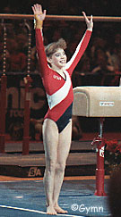

Chelle Stack (USA)
1991 Pan American Games FX Champion
 |
Chelle was born on July 23, 1973. She began gymnastics at age 9 at Delaware Valley Gymnastics. She trained at numerous clubs throughout her career, including Karolyi's, Cypress and SCATS. She retired from elite gymnastics in 1992 and attended the University of Oklahoma. For a while, she performed in Cirque du Soleil's La Nouba show in Orlando, FL. Chelle still lives in the Orlando area and has her own club, Chelle Stack's Gymnastics, in Winter Park, FL.
Competition Results
1987
Chunichi Cup: 16th AA, 5th UB
Jr. US Championships: 2nd AA
1988
American Cup:
Intl. Mixed Pairs: 6th Team
US Classic: 3rd AA
US Championships: 4th AA, 1st UB, 3rd FX, 5th V
US Olympic Trials: 5th AA
USA-USSR Dual Meet: 2nd Team, 11th AA
1989
American Cup:
French International: 4th AA
Intl. Mixed Pairs: 4th Team
US Championships: 7th AA, 1st UB, 2nd FX
US World Trials: 4th AA
World Championships (Stuttgart): 4th Team
1990
Golden Sands: 5th AA
US Championships: 11th AA
USA-GDR Dual Meet: 1st Team, 8th AA
1991
Alamo Invitational: 3rd AA
American Cup:
Buckeye Classic: 2nd AA
Intl. Mixed Pairs: 11th Team
Pan American Games: 2nd AA, 1st FX
US Championships: 12th AA, 3rd UB
US Olympic Festival: 1st UB, 2nd V, 2nd B
USA-ROM Dual Meet: 12th AA
1992
US Classic: 9th AA
US Championships: 29th AA
This page was created on April 12, 2000
and was last updated on November 12, 2005.
© Gymn Forum